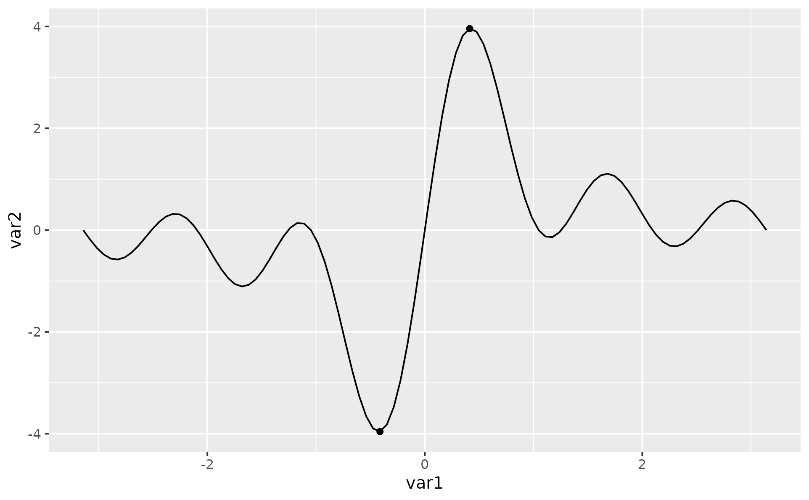
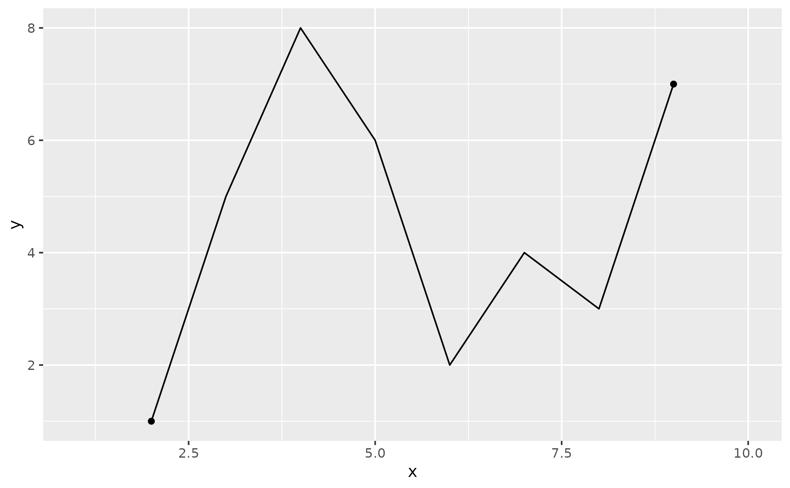
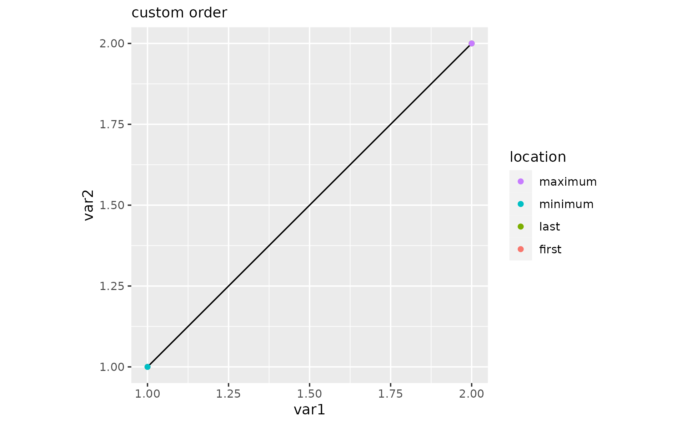
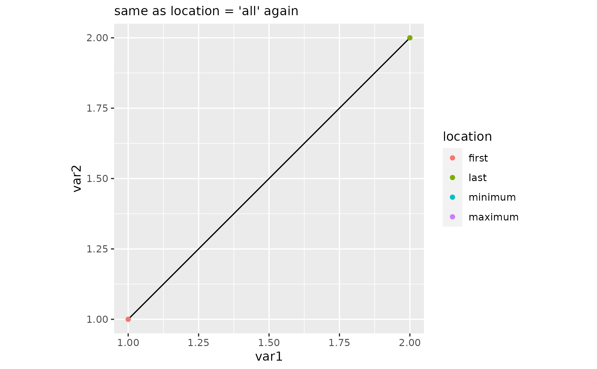
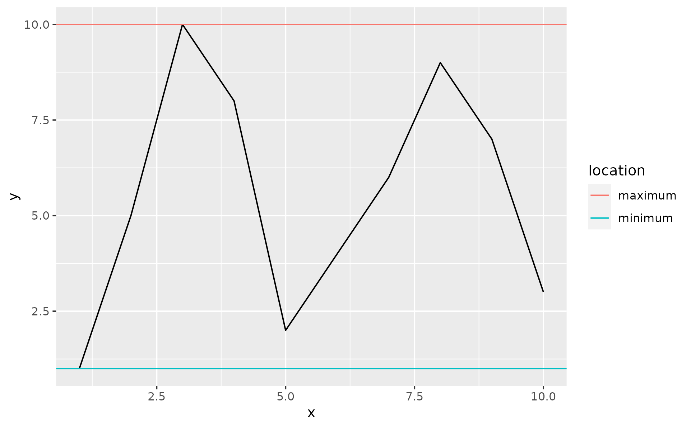

Emphasize some observations with points
Source:R/geom-pointless.R, R/stat-pointless.R
geom_pointless.RdThis is a wrapper around geom_point() with the one
additional argument: location. It allows to emphasize some
observations, namely the first, the last, the minima and/or maxima,
see examples. This geom is not particularly useful on its own, hence
its name, but hopefully in conjunction with geom_line() and friends.
Usage
geom_pointless(
mapping = NULL,
data = NULL,
stat = "pointless",
position = "identity",
...,
location = "last",
na.rm = FALSE,
orientation = NA,
show.legend = NA,
inherit.aes = TRUE
)
stat_pointless(
mapping = NULL,
data = NULL,
geom = "point",
position = "identity",
...,
location = "last",
na.rm = FALSE,
orientation = NA,
show.legend = NA,
inherit.aes = TRUE
)Arguments
- mapping
Set of aesthetic mappings created by
aes()oraes_(). If specified andinherit.aes = TRUE(the default), it is combined with the default mapping at the top level of the plot. You must supplymappingif there is no plot mapping.- data
The data to be displayed in this layer. There are three options:
If
NULL, the default, the data is inherited from the plot data as specified in the call toggplot().A
data.frame, or other object, will override the plot data. All objects will be fortified to produce a data frame. Seefortify()for which variables will be created.A
functionwill be called with a single argument, the plot data. The return value must be adata.frame, and will be used as the layer data. Afunctioncan be created from aformula(e.g.~ head(.x, 10)).- position
Position adjustment, either as a string, or the result of a call to a position adjustment function.
- ...
Other arguments passed on to
layer(). These are often aesthetics, used to set an aesthetic to a fixed value, likecolour = "red"orsize = 3. They may also be parameters to the paired geom/stat.- location
A character vector specifying which observations to highlight, default is
"last".- na.rm
If
FALSE, the default, missing values are removed with a warning. IfTRUE, missing values are silently removed.- orientation
The orientation of the layer. The default (
NA) automatically determines the orientation from the aesthetic mapping. In the rare event that this fails it can be given explicitly by settingorientationto either"x"or"y". See the Orientation section for more detail.- show.legend
logical. Should this layer be included in the legends?
NA, the default, includes if any aesthetics are mapped.FALSEnever includes, andTRUEalways includes. It can also be a named logical vector to finely select the aesthetics to display.- inherit.aes
If
FALSE, overrides the default aesthetics, rather than combining with them. This is most useful for helper functions that define both data and aesthetics and shouldn't inherit behaviour from the default plot specification, e.g.borders().- geom, stat
Overwrite the default connection between
geom_pointless()andstat_pointless().
Details
The argument location allows you to control which observations
to highlight. If location is "last", the default, a single point
is plotted by default at the last non-missing observation. The
locations are determined in the order in which they appear in the
data -- like geom_path() does compared to geom_line().
See the vignette("ggpointless") for more details.
Overplotting
Points may be plotted on top of one another. If location is set
to "all", then the order in which points are plotted from top to
bottom is: "first" > "last" > "minimum" > "maximum".
Otherwise, the order is determined as specified in the location argument,
which also then applies to the order legend key labels, see examples.
Orientation
This geom treats each axis differently and, can thus have two orientations. Often the orientation is easy to deduce from a combination of the given mappings and the types of positional scales in use. Thus, ggplot2 will by default try to guess which orientation the layer should have. Under rare circumstances, the orientation is ambiguous and guessing may fail. In that case the orientation can be specified directly using the orientation parameter, which can be either "x" or "y". The value gives the axis that the geom should run along, "x" being the default orientation you would expect for the geom.
Aesthetics
geom_pointless() understands the following aesthetics (required aesthetics are in bold):
x
y
alpha
color
fill
group
shape
size
stroke
Examples
x <- seq(-pi, pi, length.out = 100)
y <- outer(x, 1:5, FUN = function(x, y) sin(x * y))
df1 <- data.frame(
var1 = x,
var2 = rowSums(y)
)
# not terribly useful on its own ...
p <- ggplot(df1, aes(x = var1, y = var2))
p + geom_pointless()
p + geom_pointless(location = "all")
# ... but in conjunction with geom_line(), hopefully
p <- p + geom_line()
p + geom_pointless()
p + geom_pointless(location = c("first", "last"))
p + geom_pointless(location = c("minimum", "maximum"))

p + geom_pointless(location = c("all"))
# The layer computes one additional variable, 'location',
# that you can map e.g. to the color aesthetic
p + geom_pointless(
aes(color = after_stat(location)),
location = c("all"),
size = 3
)
# Example with missing first and last observations
set.seed(42)
df1 <- data.frame(x = 1:10, y = c(NA, sample(1:8), NA))
ggplot(df1, aes(x, y)) +
geom_line() +
geom_pointless(location = c("first", "last"))
#> Warning: Removed 2 rows containing non-finite values (stat_pointless).
#> Warning: Removed 2 row(s) containing missing values (geom_path).

# Change the order in which points are drawn when they overlap
df1 <- data.frame(var1 = 1:2, var2 = 1:2)
cols <- c(
"first" = "#f8766d",
"last" = "#7cae00",
"minimum" = "#00bfc4",
"maximum" = "#c77cff"
)
p <- ggplot(df1, aes(x = var1, y = var2)) +
geom_path() +
coord_equal() +
# makes comparision easier
scale_color_manual(values = cols)
# same as location = 'all'
p + geom_pointless(aes(color = after_stat(location)),
location = c("first", "last", "minimum", "maximum")
) +
labs(subtitle = "same as location = 'all'")
# reversed custom order
p + geom_pointless(aes(color = after_stat(location)),
location = c("maximum", "minimum", "last", "first")
) +
labs(subtitle = "custom order")

# same as location = 'all' again
p + geom_pointless(aes(color = after_stat(location)),
location = c("maximum", "minimum", "last", "first", "all")
) +
labs(subtitle = "same as location = 'all' again")

# Use stat_pointless() with a geom other than "point"
set.seed(42)
df1 <- data.frame(x = 1:10, y = sample(1:10))
ggplot(df1, aes(x, y)) +
geom_line() +
stat_pointless(
aes(yintercept = y, color = after_stat(location)),
location = c("maximum", "minimum"),
geom = "hline"
)

# Example using facets
# https://stackoverflow.com/q/29375169
p <- ggplot(economics_long, aes(x = date, y = value)) +
geom_line() +
facet_wrap(~variable, ncol = 1, scales = "free_y")
p +
geom_pointless(
aes(color = after_stat(location)),
location = c("minimum", "maximum"),
size = 2
)